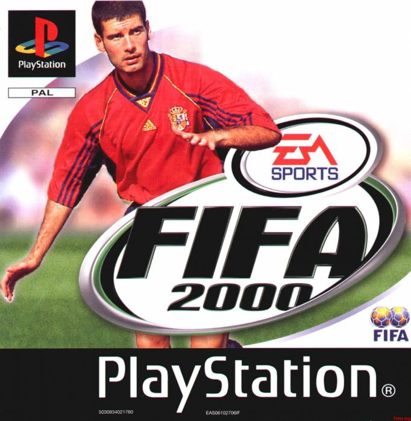
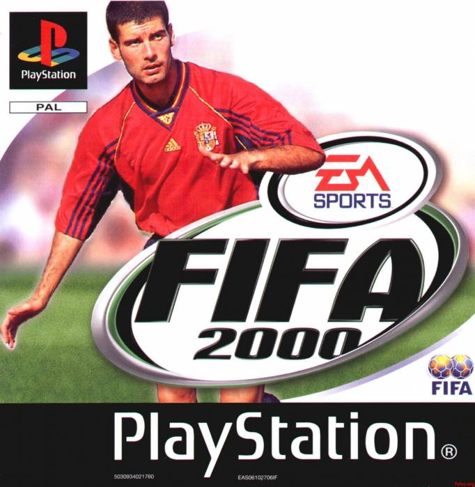

PlayStation es una videoconsola de sobremesa de 32 bits lanzada por Sony Computer Entertainment el 3 de diciembre de 1994 en Japón. Se considera la videoconsola más exitosa de la quinta generación tanto en ventas como en popularidad. Además de la original se lanzó la PSone. Tuvo gran éxito al implantar el CD-ROM dentro de su hardware a pesar de que otras compañías como SEGA (Sega CD), Panasonic (3DO), Phillips (CD-i), SNK (Neo Geo CD) y Atari (Atari Jaguar) ya lo habían empleado. Dichas compañías tuvieron poco éxito al utilizar el CD-ROM como soporte para almacenar juegos.

 

Crash Bandicoot es una serie de videojuegos de plataformas, originalmente exclusiva de PlayStation, publicada por Sony Computer Entertainment y creada por la compañía de videojuegos estadounidense Naughty Dog.
Final Fantasy VIII es un videojuego de tipo RPG desarrollado por Squaresoft en 1999 para el sistema PlayStation, aunque posteriormente salió una versión para PC.
FIFA 2000, más conocido como FIFA Football 2000 o FIFA 00, es un videojuego de Electronic Arts distribuido por EA Sports. Esta misma fue la séptima entrega de la saga.
Metal Gear es una serie de videojuegos creada por Hideo Kojima, desarrollada y publicada por la compañía Konami, en la que el jugador toma el control de un soldado élite, experto en tácticas de combate, supervivencia y sigilo, cuyo nombre de operaciones es Snake